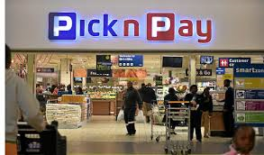

PICK 'N PAY
Pick n Pay is the second largest supermarket chain store in South Africa, established in 1967. Raymond Ackerman purchased three Pick n Pay supermarkets in Cape Town from Goldin, and served as executive chairman until his retirement in 2010. His eldest son, Gareth, is the current chairman.